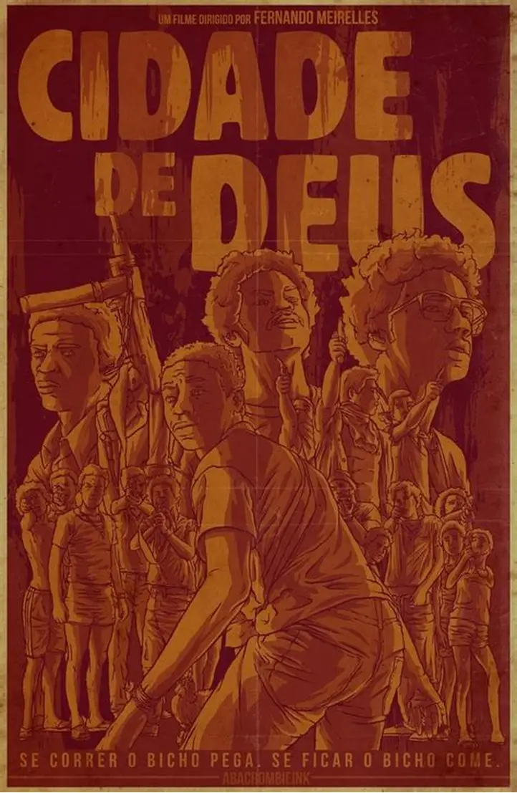

1. Cidade de Deus

O filme Cidade de Deus, dirigido por Fernando Meirelles, mostra a realidade de uma comunidade do Rio de Janeiro marcada pela pobreza, violência e tráfico de drogas. A história acompanha Buscapé, um jovem que busca mudar sua vida por meio da fotografia. O filme aborda temas como desigualdade social, criminalidade e falta de oportunidades.